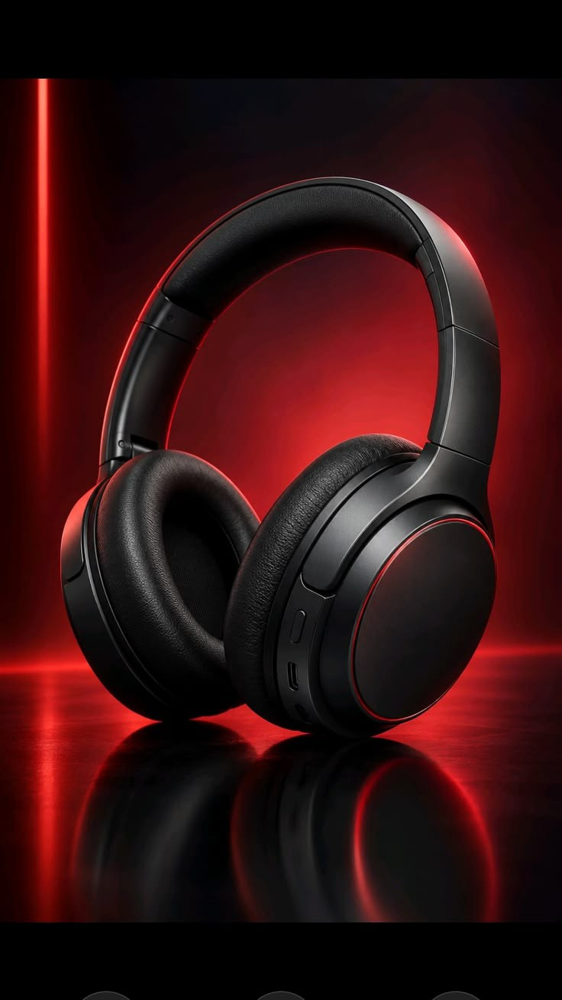

Active Noise Cancellation (ANC):
Block out the world and immerse yourself completely in your music with advanced hybrid ANC technology.
Experience studio-grade active noise cancellation and crystal-clear immersive sound designed for true audiophiles.

Block out the world and immerse yourself completely in your music with advanced hybrid ANC technology.
Power through your week with ultra-fast charging—just 10 minutes gives you 5 hours of playback.
Memory foam ear cushions wrapped in breathable protein leather for all-day listening without fatigue.
Experience the seamless pairing with your phone or laptop instantly.
Use the Sonic Means mobile app to tailor your sound profile.
Enjoy lossless audio quality wherever you go.
"The soundstage on the Sonic Means headphones blew me away. The bass is deep, and highs are crystal clear!"
"Battery life is insane. I charged it once and used it for my entire work week."
⭐⭐⭐⭐⭐
5/5 Stars based on 1,200+ audiophile reviews
$199 — Essential ANC, 30-hour battery, Standard carry case.
$249 — Advanced Hybrid ANC, 40-hour battery, Spatial Audio, Hard shell case.
$349 – Hand-tuned drivers, Custom matte finish, Premium leather case, Lifetime warranty.
A: Yes, Sonic Means connects seamlessly via Bluetooth 5.4 to all iOS, Android, Windows, and Mac devices.
A: Absolutely! A braided 3.5mm audio cable is included in the box for wired zero-latency listening.
A: We offer a 30-day risk-free home trial with free returns.